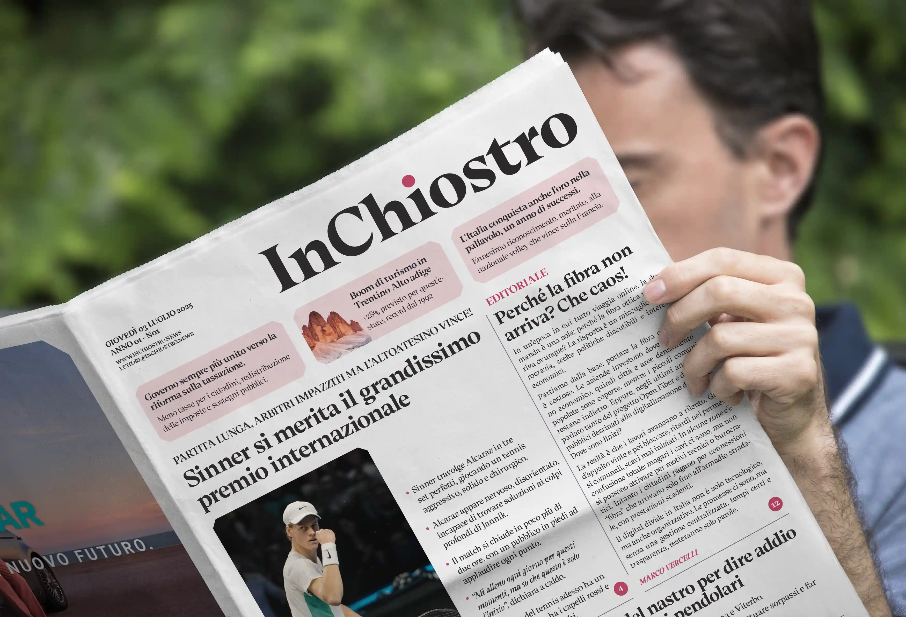
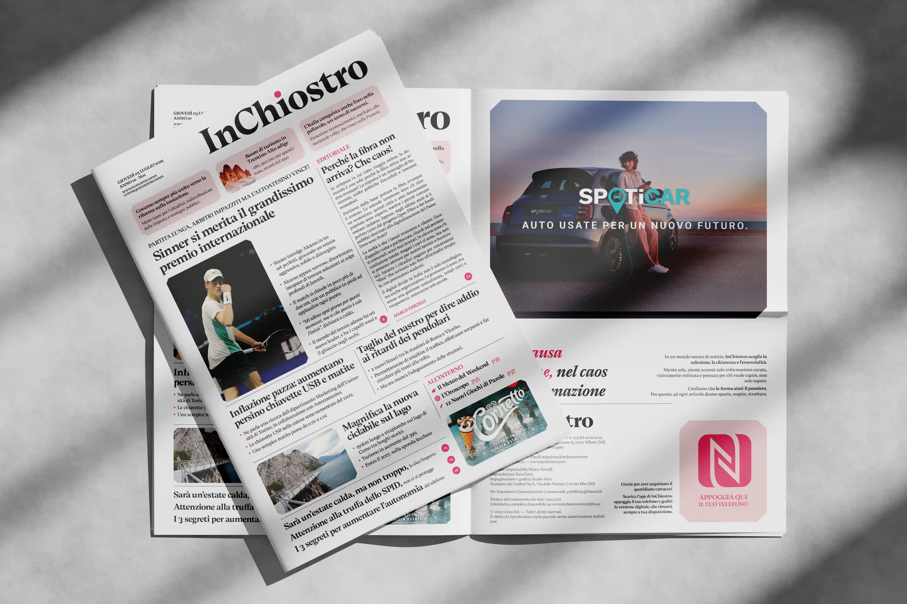
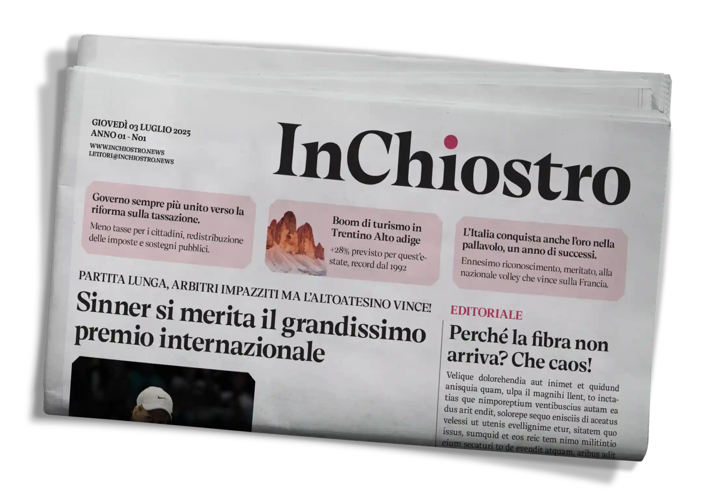
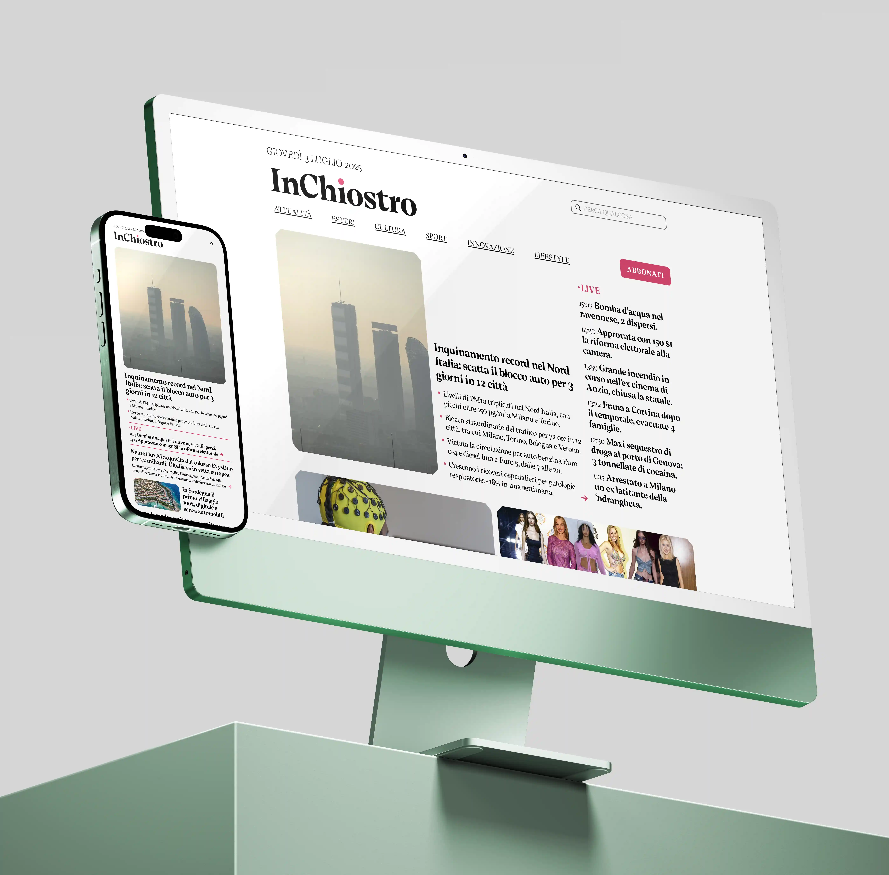

Nel corso degli anni i quotidiani sono, chi più e chi meno, costantemente evoluti dal punto di vista
del design grafico diventando più moderni senza tuttavia mai staccarsi dalla classica impostazione
della prima pagina, che spesso risulta caotica e confusionaria, soprattutto per chi non è abituato a
leggerne uno. In un mercato già in difficoltà, questo diventa un ulteriore disincentivo alla
lettura dei giornali.
Ho quindi deciso di progettare l'identità visiva di un
ipotetico
nuovo quotidiano affinché potesse essere più moderna, accattivante e soprattutto meno "oppressiva".
È stata anche l'occasione per integrare soluzioni tecnologiche innovative per modernizzare questo
settore..
Giugno 2025


